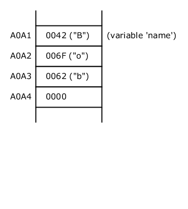

2017-05-09
What is the meaning of null? How is null implemented? When should you use null in your source code. And when should you not use it? These are the questions answered in this article.
null is a fundamental and most important concept in many programming languages. It is ubiquitous in all kinds of source code written in these languages. Hence it is essential to fully grasp the idea of null. We have to understand its semantics and implementation, and we need to know how to correctly use null in our source code.
Comments in programmer forums sometimes reveal a bit of confusion with null. Some programmers even try to completely avoid null. Because they think of it as the 'million-dollar mistake', a term coined by Tony Hoare, the inventor of null.
Here is a simple example: Suppose that Alice's email_address points to null. What does this mean? Does it mean that Alice doesn't have an email address? Or that her email address is unknown? Or that it is secret? Or does it simply mean that email_address is 'undefined' or 'uninitialized'? Let's see. After reading this article, everybody should be able to answer such questions without hesitation.
![[Note]](images/note.png) | Note |
|---|---|
This article is programming language-neutral - as far as possible. Explanations are general and not tied to a specific language. Please consult your programming language manuals for specific advice on null. However, this article contains some simple source code examples shown in Java. But it's not difficult to translate them into your favorite language.. |
Before discussing the meaning of null it is indispensable to understand how null is implemented in memory at runtime.
| Note |
|---|---|
We will have a look at a typical implementation of null. The actual implementation in a given environment depends on the programming language and target environment, and might differ from the implementation shown here. |
Suppose we have the following source code instruction:
String name = "Bob";
Here we declare a variable of type String and with the identifier name that points to the string "Bob".
Saying "points to" is important in this context because we are assuming that we work with reference types (and not with value types). More on this later.
To keep things simple we will make the following assumptions:
The above instruction is executed on a 16-bits CPU with a 16-bits address space.
Strings are encoded as UTF-16. They are terminated with 0 (as in C or C++).
The following picture shows an excerpt of the memory after executing the above instruction:
Figure 1: Variable name points to "Bob"
The memory addresses in the above picture are chosen arbitrarily and are irrelevant for our discussion.
As we can see the string "Bob" is stored at address B000 and occupies 4 memory cells.
Variable name is located at address A0A1. The content of A0A1 is B000, which is the starting memory location of the string "Bob". That's why we say: The variable name points to "Bob".
So far so good.
Now suppose that, after executing the above instruction, the following one is executed:
name = null;
Now name points to null.
And this is the new state in memory:
Figure 2: Variable name points to null
We can see that nothing has changed for the string "Bob" which is still stored in memory.
| Note |
|---|---|
The memory needed to store the string "Bob" might later be released if there is a garbage collector and no other reference points to "Bob", but this is irrelevant in our discussion. |
What's important is that the content of A0A1 (which represents the value of variable name) is now 0000. So, variable name doesn't point to "Bob" anymore. The value 0 (all bits at zero) is a typical value used in memory to denote null. It means that there is no value associated with name. You can also think of it as the absence of data or simply no data.
| Note |
|---|---|
The actual memory value used to denote "The Java Virtual Machine specification does not mandate a concrete value encoding |
Remember:
If a reference points to
null, it simply means that there is no value associated with it.Technically speaking, the memory location assigned to the reference contains the value 0 (all bits at zero), or any other value that denotes
nullin the given environment.
We can deduce from the previous section that operations involving null are extremely fast and easy to perform at runtime.
There are only two kinds of operations:
initializing or setting a reference to
null(e.g.name = null):The only thing to do is to change the content of one memory cell (e.g. setting it to 0).
checking if a reference points to
null(e.g.if name == null):The only thing to do is to check if the memory cell of the reference holds the value 0.
Remember:
nulloperations are exceedingly fast and cheap.
So far we assumed working with reference types. The reason for this is simple: null doesn't exist for value types.
Why?
As we have seen previously, a reference is a pointer to a memory-address that stores a value (e.g. a string, a date, a customer, whatever). If a reference points to null, then no value is associated with it.
On the other hand, a value is, by definition, the value itself. There is no pointer involved. A value type is stored as the value itself. Therefore the concept of null doesn't exist for value types.
The following picture demonstrates the difference. On the left side you can see again the memory in case of variable name being a reference pointing to "Bob". The right side shows the memory in case of variable name being a value type.
|  | |
| Reference type | Value type |
As we can see, in case of a value type, the value itself is directly stored at the address A0A1 which is associated with variable name.
There would be much more to say about reference versus value types, but this is out of the scope of this article. Please note also that some programming languages support only reference types, others support only value types, and some (e.g. C# and Java) support both of them.
Remember:
The concept of
nullexists only for reference types. It doesn't exist for value types.
Suppose we have a type person with a field emailAddress. Suppose also that, for a given person which we will call Alice, emailAddress points to null.
What does this mean? Does it mean that Alice doesn't have an email address? Not necessarily.
As we have seen already, what we can assert is that no value is associated with emailAddress.
But why is there no value? What is the reason of emailAddress pointing to null? If we don't know the context and history, then we can only speculate. The reason for null could be:
Alice doesn't have an email address
Alice has an email address but:
it has not yet been entered in the database
it is secret (unrevealed for security reasons)
there is a bug in a routine that creates a person object without setting field
emailAddressetc. etc.
In practice we often know the application and context. We intuitively associate a precise meaning to null. In a simple and flawless world, null would simply mean that Alice actually doesn't have an email address.
When we write code, the reason why a reference points to null is often irrelevant. We just check for null and take appropriate actions. For example, suppose that we have to write a loop that sends emails for a list of persons. The code (in Java) could look like this:
for ( Person person: persons ) {
if ( person.getEmailAddress() != null ) {
// code to send email
} else {
logger.warning ( "No email address for " + person.getName() );
}
}In the above loop we don't care about the reason for null. We just acknowledge the fact that there is no email address, log a warning, and continue.
Remember:
If a reference points to
nullthen it always means that there is no value associated with it.In most cases,
nullhas a more specific meaning that depends on the context.
Sometimes it is important to know why a reference points to null.
Consider the following function signature in a medical application:
List<Allergy> getAllergiesOfPatient ( String patientId )
In this case, returning null (or an empty list) is ambiguous. Does it mean that the patient doesn't have allergies, or does it mean that an allergy test has not yet been performed? These are two semantically very different cases that must be handled differently. Or else the outcome might be life-threatening. Just suppose that the patient has allergies, but an allergy test has not yet been done and the software tells the doctor that 'there are no allergies'. Hence we need additional information. We need to know why the function returns null.
It would be tempting to say: Well, to differentiate, we return null if an allergy test has not yet been performed, and we return an empty list if there are no allergies.
DON'T DO THIS!
This is bad data design for multiple reasons;
The different semantics for returning
nullversus returning an empty list would need to be well documented. And as we all know, comments can be wrong (i.e. inconsistent with the code), outdated, or they might even be inaccessible.There is no protection for misuses in client code that calls the function. For example, the following code is wrong, but it compiles without errors. Moreover, the error is difficult to spot for a human reader. We can't see the error by just looking at the code without considering the comment of
getAllergiesOfPatientList<Allergy> allergies = getAllergiesOfPatient ( "123" ); if ( allergies == null ) { System.out.println ( "No allergies" ); // <-- WRONG! } else if ( allergies.isEmpty() ) { System.out.println ( "Test not done yet" ); // <-- WRONG! } else { System.out.println ( "There are allergies" ); }The following code would be wrong too:
List<Allergy> allergies = getAllergiesOfPatient ( "123" ); if ( allergies == null || allergies.isEmpty() ) { System.out.println ( "No allergies" ); // <-- WRONG! } else { System.out.println ( "There are allergies" ); }If the
null/empty-logic ofgetAllergiesOfPatientchanges in the future, then the comment needs to be updated, as well as all client code. And there is no protection against forgetting anyone of these changes.If, later on, there is another case to be distinguished (e.g. an allergy test is pending - the results are not yet available), or if we want to add specific data for each case, then we are stuck.
The article Is it Really Better to 'Return an Empty List Instead of null'? - Part 2 explains why it is generally a bad idea to return empty lists (and empty strings), especially in programming languages with compile-time
null-safety. Functions should returnnull(if appropriate) or a non-empty and immutable list. Please refer to the article for further explanations.
Obviously, the function must return more information than just a list.
There are different ways to do this, depending on the programming language we use. Let's have a look at a possible solution in Java.
In order to differentiate the cases, we define a parent type AllergyTestResult, as well as three sub-types that represent the three cases (NotDone, Pending, and Done):
interface AllergyTestResult {}interface NotDoneAllergyTestResult extends AllergyTestResult {}interface PendingAllergyTestResult extends AllergyTestResult {
public Date getDateStarted();
}interface DoneAllergyTestResult extends AllergyTestResult {
public Date getDateDone();
public List<Allergy> getAllergies(); // null if no allergies
// non-empty if there are allergies
}As we can see, for each case we can have specific data associated with it.
Instead of simply returning a list, getAllergiesOfPatient now returns an AllergyTestResult object:
AllergyTestResult getAllergiesOfPatient ( String patientId )
Client code is now less error-prone and looks like this:
AllergyTestResult allergyTestResult = getAllergiesOfPatient ( "123" );
if ( allergyTestResult instanceof NotDoneAllergyTestResult ) {
System.out.println ( "Test not done yet" );
} else if ( allergyTestResult instanceof PendingAllergyTestResult ) {
System.out.println ( "Test pending" );
} else if ( allergyTestResult instanceof DoneAllergyTestResult ) {
List<Allergy> list = ((DoneAllergyTestResult) allergyTestResult).getAllergies();
if ( list == null ) {
System.out.println ( "No allergies" );
} else if ( list.isEmpty () ) {
assert false;
} else {
System.out.println ( "There are allergies" );
}
} else {
assert false;
} | Note |
|---|---|
If you think that the above code is quite verbose and a bit hard to write then you are not alone. Some modern languages allow us to write conceptually similar code much more succinctly. And null-safe languages distinguish between nullable and non-nullable values in a reliable way at compile-time - there is no need to comment the nullability of a reference or to check whether a reference declared to be non-null has accidentally been set to |
Remember:
If we need to know why there is no value associated with a reference then additional data must be provided in order to differentiate the possible cases.
Consider the following instructions:
String s1 = "foo"; String s2 = null; String s3;
The first instruction declares a String variable s1 and assigns it the value "foo".
The second instruction assigns null to s2.
The more interesting instruction is the last one. No value is explicitly assigned to s3. Hence, it is reasonable to ask: What is the state of s3 after its declaration? What will happen if we write s3 to the OS output device?
It turns out that the state of a variable (or class field) declared without assigning a value depends on the programming language. Moreover, each programming language might have specific rules for different cases. For example, different rules apply for reference types and value types, static and non-static members of a class, global and local variables, etc.
As far as I know the following rules are typical variations encountered:
It is illegal to declare a variable without also assigning a value
There is an arbitrary value stored in
s3, depending on the memory content at the time of execution - there is no default valueA default value is automatically assigned to
s3:in case of a reference type, the default value is
nullin case of a value type, the default value depends on the variable's type. For example
0for integer numbers,falsefor a boolean, etc.
the state of
s3is 'undefined'the state of
s3is 'uninitialized' and any attempt to uses3results in a compile-time error.
The best option is the last one. All other options are error-prone and/or impractical - for reasons we will not discuss here, because this article focuses on null.
As an example, Java applies the last option for local variables. Hence, the following code results in a compile-time error at the second line:
String s3; System.out.println ( s3 );
Compiler output:
error: variable s3 might not have been initialized
Remember:
If a variable is declared, but no explicit value is assigned to it, then it's state depends on several factors which are different in different programming languages.
In some languages
nullis the default value for reference types.
The basic rule is simple: null should only be allowed when it makes sense for an object reference to have 'no value associated with it'. (Note: an object reference can be a variable, constant, property (class field), input/output argument, etc.)
For example, suppose type person with fields name and dateOfFirstMarriage:
interface Person {
public String getName();
public Date getDateOfFirstMarriage();
}Every person has a name. Hence it doesn't make sense for field name to have 'no value associated with it'. Field name is non-nullable. It is illegal to assign null to it.
On the other hand, field dateOfFirstMarriage doesn't represent a required value. Not everyone is married. Hence it makes sense for dateOfFirstMarriage to have 'no value associated with it'. Therefore dateOfFirstMarriage is a nullable field. If a person's dateOfFirstMarriage field points to null then it simply means that this person has never been married.
| Note |
|---|---|
Unfortunately most popular programming languages don't distinguish between nullable and non-nullable types. There is no way to reliably state that interface Person {
public @Nonnull String getName();
public @Nullable Date getDateOfFirstMarriage();
}However, such annotations are not used by the compiler to ensure null-safety. Still, they are useful for the human reader, and they can be used by IDEs and tools such as static code analysers. |
It is important to note that null should not be used to denote error conditions.
Consider a function that reads configuration data from a file. If the file doesn't exist or is empty then a default configuration should be returned. Here is the function's signature:
public Config readConfigFromFile ( File file )
What should happen in case of a file read error?
Simply return null?
NO!
Each language has it's own standard way to signal error conditions and provide data about the error, such as a description, type, stack trace etc. Many languages (C#, Java, etc.) use an exception mechanisms, and exceptions should be used in these languages to signal runtime errors. Hence, readConfigFromFile should not return null to denote an error. Instead, the function's signature should be changed in order to make it clear that the function might fail:
public Config readConfigFromFile ( File file ) throws IOException
Remember:
Allow
nullonly if it makes sense for an object reference to have 'no value associated with it'.Don't use
nullto signal error conditions.
Consider the following code:
String name = null; int l = name.length();
At runtime, the above code results in the infamous null pointer error, because we try to execute a method of a reference that points to null. In C#, for example, a NullReferenceException is thrown, in Java it is a NullPointerException.
The null pointer error is nasty.
It is the most frequent bug in many software applications and has been the cause for countless troubles in the history of software development. Tony Hoare, the inventor of null, calls it the 'billion-dollar mistake'.
But Tony Hoare (Turing Award winner in 1980 and inventor of the Quicksort algorithm), also gives a hint to a solution in his speech:
"More recent programming languages like Spec# have introduced declarations for non-null references. This is the solution, which I rejected in 1965."
Contrary to some common belief, the culprit is not null per se. The problem is the lack of support for null handling in many programming languages. For example, at the time of writing (May 2017), none of the top ten languages in the Tiobe index natively differentiates between nullable and non-nullable types.
Therefore, some new languages provide compile-time null-safety and specific syntax for conveniently handling null in source code. In these languages the above code would result in a compile-time error. Software quality and reliability increases considerably because the null pointer error delightfully disappears.
Null-safety is a fascinating topic that deserves its own article.
Remember:
Whenever possible, use a language that supports compile-time null-safety.
Besides the concept of null, there are other concepts used to denote the 'absence of a value' and avoid null pointer errors, most notably:
the Optional/Maybe Pattern (often used in functional programming languages)
the Null Object Pattern
You can read more about these in my previous article Why We Should Love null.
Here is a summary of key points to remember:
If a reference points to
null, it always means that there is no value associated with it.In most cases,
nullhas a more specific meaning that depends on the context.If we need to know why there is no value associated with a reference then additional data must be provided in order to differentiate the possible cases.
Allow
nullonly if it makes sense for an object reference to have 'no value associated with it'.Don't use
nullto signal error conditions.The concept of
nullexists only for reference types. It doesn't exist for value types.In some languages
nullis the default value for reference types.nulloperations are exceedingly fast and cheap.Whenever possible, use a language that supports compile-time null-safety.